關於我們About us
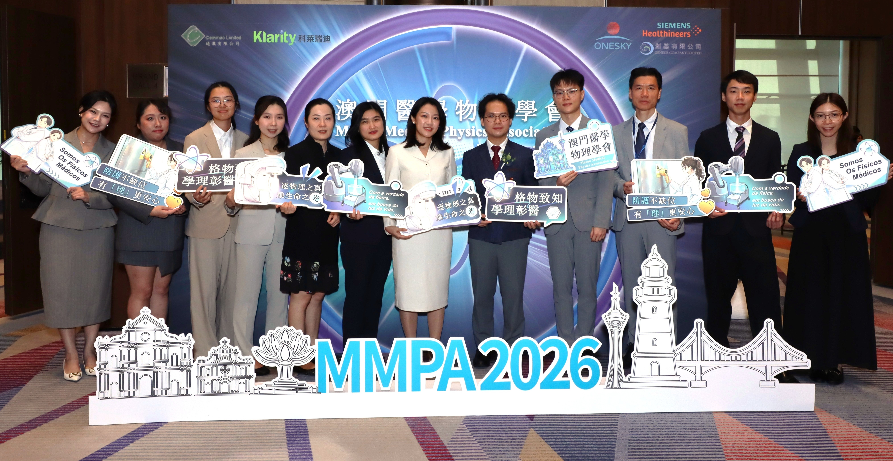
簡介Introduction
澳門醫學物理學會（MMPA）為非牟利學術團體，由本澳從事放射治療、醫學影像及核醫學工作的醫學物理師與放射師共同發起，於 2024 年 9 月 19 日正式登記成立。
澳門醫學物理的發展始於 2003 年鏡湖醫院放射治療中心的啟用，結束了過往本澳癌症患者必須遠赴外地就醫的歷史；隨著 2024 年離島醫療綜合體（協和澳門醫學中心）投入服務，本澳正式邁入雙放療中心與引進國際前沿技術的新階段。為凝聚本地從業人員力量、對標國際專業標準，學會應運而生。學會的創立，標誌著澳門醫學物理邁向組織化與規範化發展的里程碑，致力於建構完善的本地專業體系，守護每一次放射治療的安全與精準。
The Macau Medical Physics Association (MMPA) is a non-profit academic organization founded jointly by medical physicists and radiographers working in radiotherapy, medical imaging and nuclear medicine in Macau. It was formally registered on 19 September 2024.
Medical physics in Macau began with the opening of the Radiotherapy Centre at Kiang Wu Hospital in 2003, which ended the era in which local cancer patients had to travel abroad for treatment. With the Islands Medical Complex (Macau Union Medical Centre) entering service in 2024, Macau has moved into a new stage with two radiotherapy centres and internationally advanced technology. The Association was founded to bring local practitioners together and to align with international professional standards. Its creation marks a milestone in the organized and standardized development of medical physics in Macau, as it works to build a sound local professional system and safeguard the safety and precision of every radiotherapy treatment.
成立宗旨Our mission
- 在澳門地區推廣有關醫學物理的應用及研究；
- 提升澳門地區從事放射工作的醫療人員在醫學物理的專業水平；
- 運用醫學物理專業知識，提升公眾及相關專業人員對輻射防護與安全的認知；
- 與澳門地區以外的學會及相關團體進行學術研討和交流。
- To promote the application of, and research in, medical physics in Macau;
- To raise the professional level in medical physics of medical staff in Macau engaged in radiation work;
- To apply medical physics expertise to improve public and professional awareness of radiation protection and safety;
- To hold academic discussions and exchanges with societies and organizations outside Macau.
發展目標Development goals
- 推動醫學物理專業在澳門的發展，建構完善的本地專業體系；
- 促進跨地區學術交流，加強與大灣區及國際醫學物理團體的合作；
- 培育專業人才，鼓勵更多澳門青年投身醫學物理事業；
- 深化與相關學科的合作；
- 推動醫學物理師納入本澳法定醫療專業人員註冊體系。
- To advance the professional development of medical physics in Macau and build a sound local professional system;
- To promote cross-regional academic exchange and strengthen cooperation with Greater Bay Area and international medical physics organizations;
- To cultivate professional talent and encourage more young people in Macau to pursue careers in medical physics;
- To deepen collaboration with related disciplines;
- To promote the inclusion of medical physicists in Macau's statutory healthcare professional registration system.
主要會務What we do
學會以促進醫學物理專業發展、提升醫療服務質量與輻射安全為宗旨，主要工作包含：
- 學術交流與專業培訓：定期舉辦「澳門放射治療及醫學物理論壇」、專題講座與臨床技能工作坊，並推動系統化的輻射防護證書課程與 CPD 學分申請，持續提升本澳從業人員專業水平。
- 業界交流與專業認可：加強與大灣區及國際醫學物理團體的合作與參訪，同時積極向政府相關部門提出倡議，推動醫學物理師納入本澳法定醫療專業人員註冊體系。
- 社區科普與人才育成：深耕校園與社區，透過科普講座、職涯推廣及發行官方會刊《追光》，增進大眾對醫療輻射與醫學物理專業的認識，為本澳培育並儲備未來專業人才。
Guided by its aims of advancing the medical physics profession and improving the quality and radiation safety of healthcare services, the Association's main work includes:
- Academic exchange and professional training: regularly organizing the Macau Radiotherapy and Medical Physics Forum, thematic lectures and clinical skills workshops, and promoting systematic radiation protection certificate courses and CPD credit applications, to keep raising the professional standard of local practitioners.
- Professional exchange and recognition: strengthening cooperation and visits with Greater Bay Area and international medical physics organizations, while actively advocating to the relevant government departments for the inclusion of medical physicists in Macau's statutory healthcare professional registration system.
- Community outreach and talent development: engaging schools and the community through science-popularization talks, career promotion and the Association's official newsletter Zhui Guang (《追光》), to raise public understanding of medical radiation and the medical physics profession and to nurture future professionals for Macau.
學會章程Constitution
章程內容整理中，稍後將於此頁公佈。 The Association's constitution is being prepared and will be published on this page shortly.
學會設會員大會主席團、理事會及監事會。 會員大會為學會最高權力機關，負責定立學會之發展方向，領導理事會及監事會拓展學會業務。 理事會為學會行政機關，專責學會之行政事務、對外通訊聯絡，以及活動籌備等工作。 監事會為學會之監察機關，專責監察理事會之工作合理性、財政核算，每年就理事會工作成果提出意見及建議，以確保學會發展符合澳門特別行政區法律。 The Association comprises the Presidium of the General Assembly, the Board of Directors and the Supervisory Board. The General Assembly is the Association's highest authority; it sets the direction of development and leads the Board and the Supervisory Board in expanding the Association's work. The Board of Directors is the executive body, responsible for administration, external communication and event organization. The Supervisory Board is the oversight body; it reviews the soundness of the Board's work and its financial accounts, and each year offers opinions and recommendations on the Board's results, so that the Association's development complies with the laws of the Macao Special Administrative Region.
會員大會主席團General Assembly
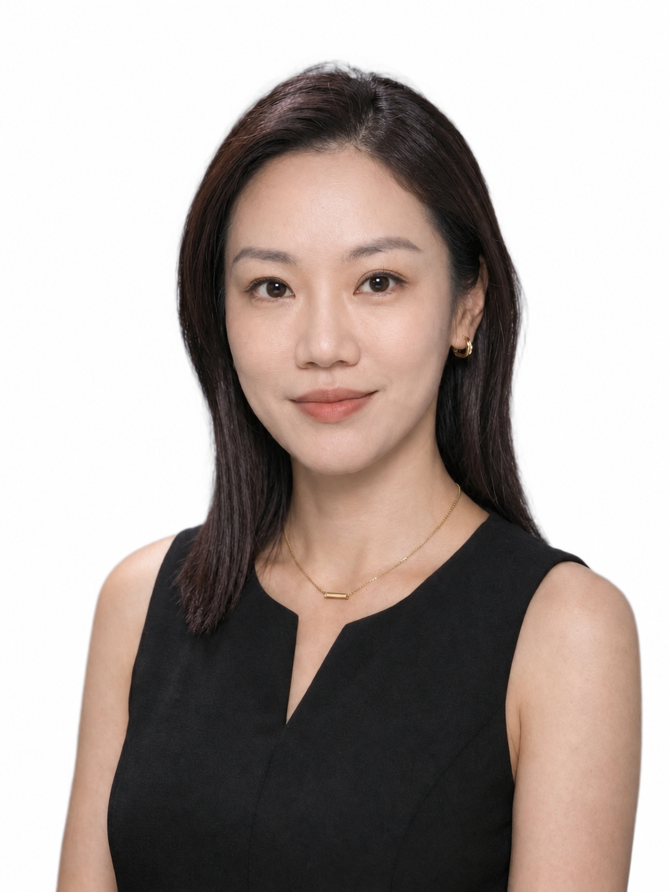
李敏兒
會長Chairperson
放射師、醫學物理師Radiographer, Medical Physicist
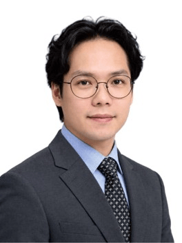
廖偉霆
副會長Vice Chairperson
放射師、醫學物理師Radiographer, Medical Physicist
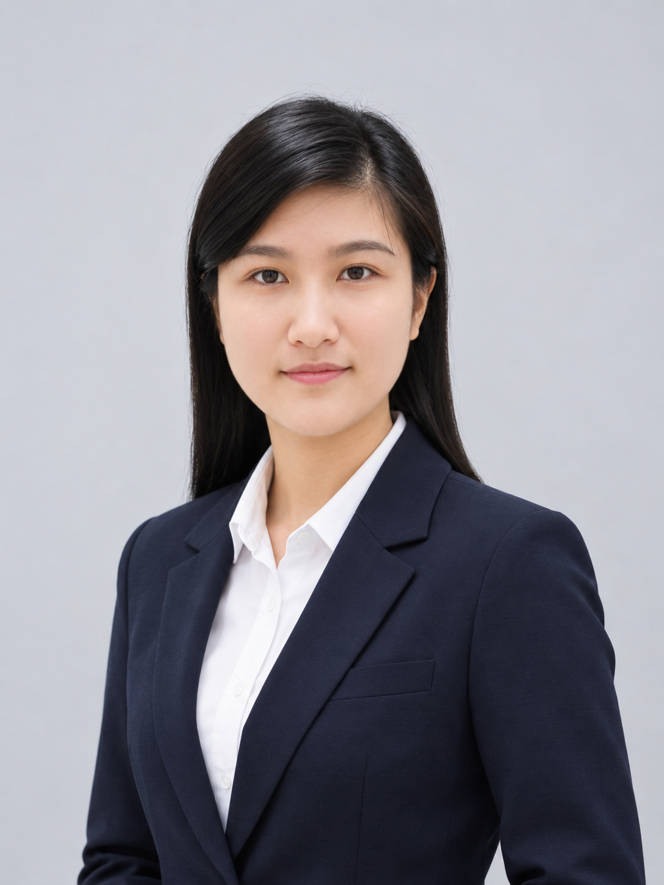
許正妍
秘書長Secretary-General
放射師Radiographer
理事會Board of Directors
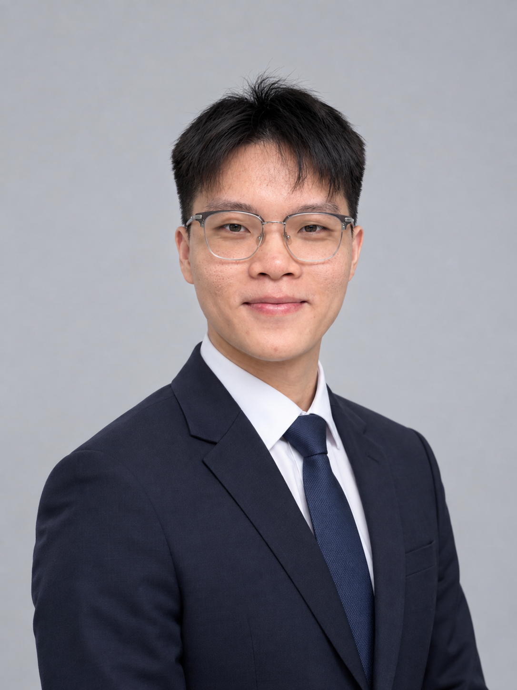
李嘉浩
理事長Director-General
醫學物理師Medical Physicist
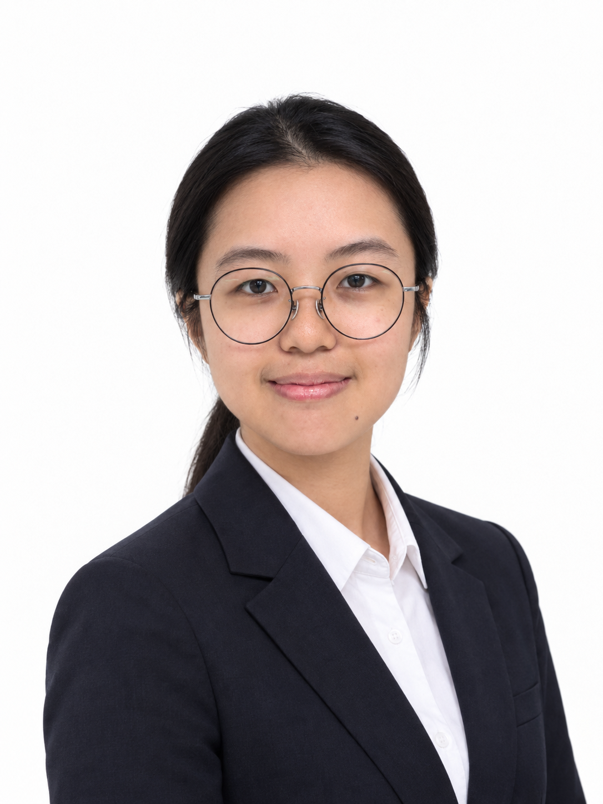
李凱彤
副理事長Deputy Director-General
醫學物理師Medical Physicist
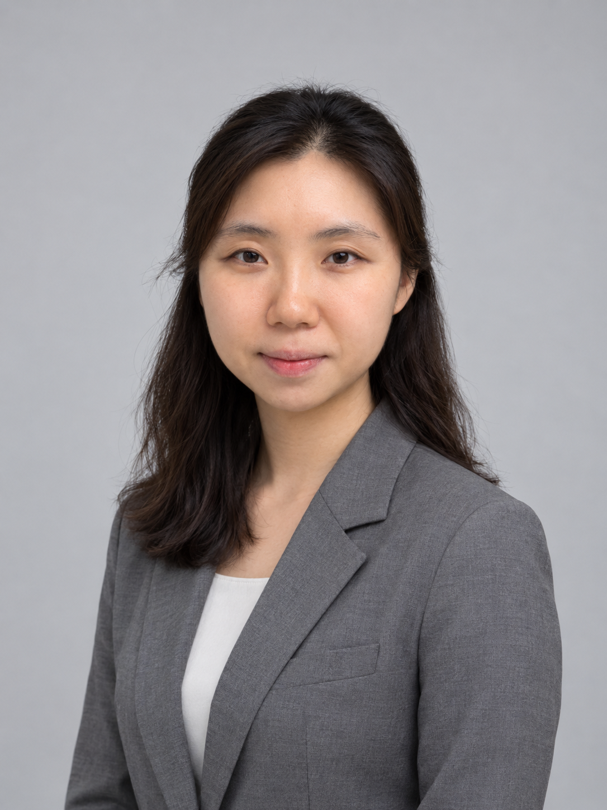
張浩澄
財務Treasurer
醫學物理師Medical Physicist
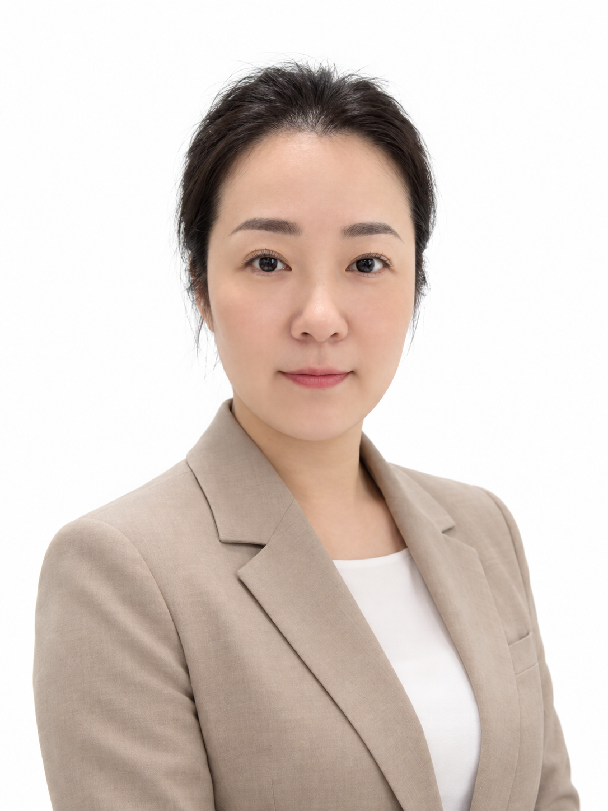
周雯
理事Director
護士Nurse
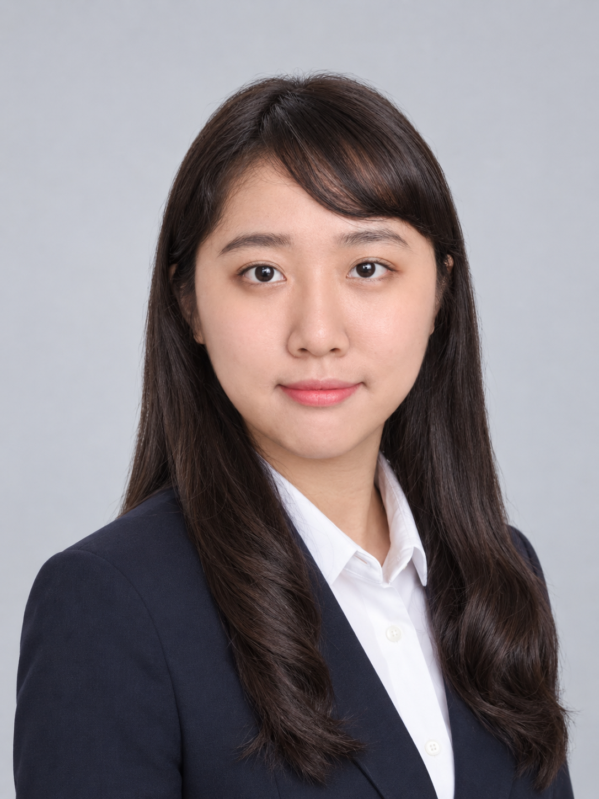
陳欣如
理事Director
放射師Radiographer
監事會Supervisory Board
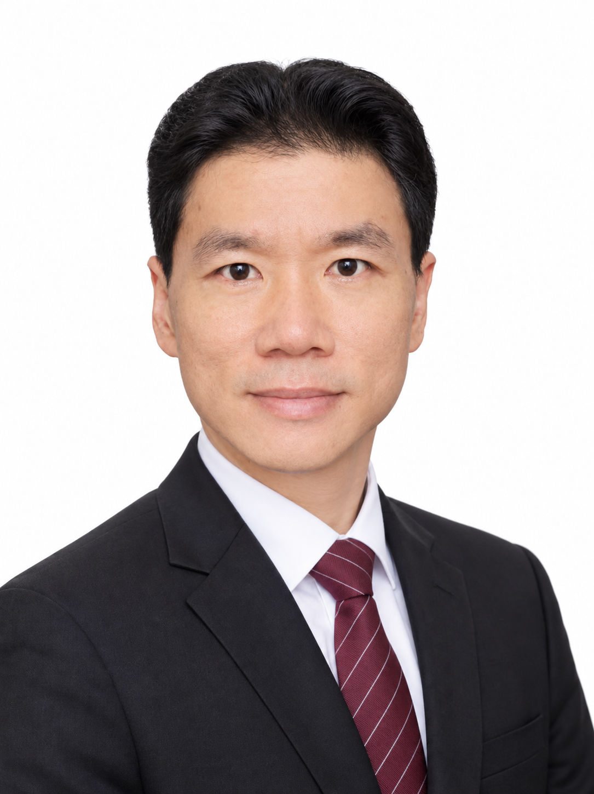
梁志強
監事長Chief Supervisor
工程師Engineer
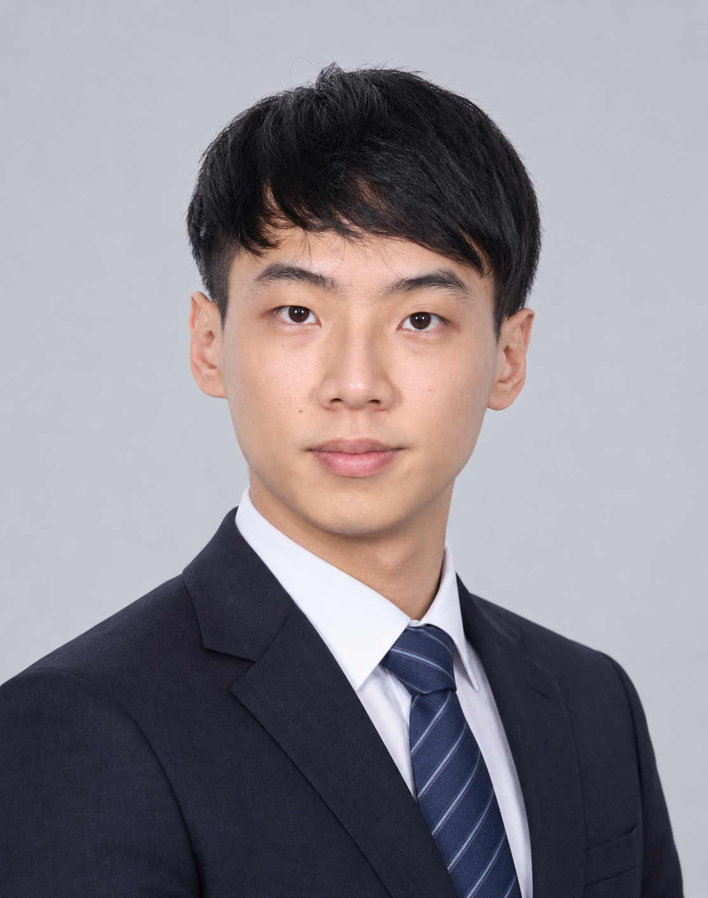
麥敬樂
副監事長Deputy Chief Supervisor
放射師Radiographer
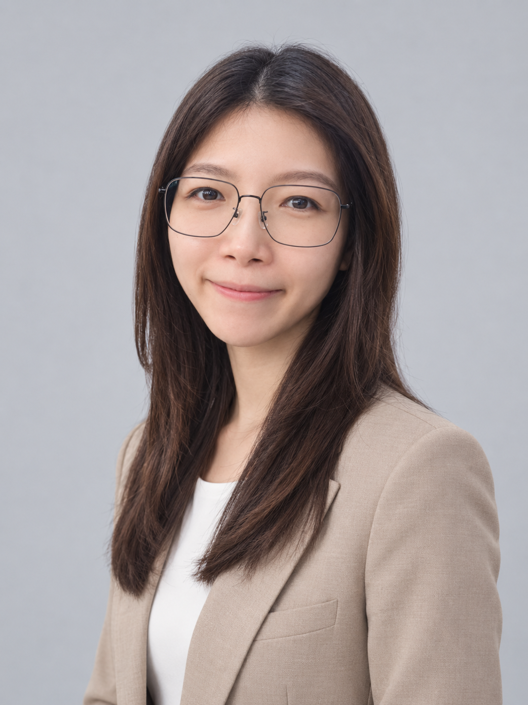
鄧穎
秘書Secretary
放射師Radiographer
顧問Advisors

梁頌文
臨床顧問Clinical Advisor
放射治療專科醫生／仁伯爵綜合醫院Radiation Oncologist / Conde S. Januário Hospital

莫昇萍
學術顧問Academic Advisor
電子及電腦工程系教授／澳門大學Professor of Electronic and Computer Engineering / University of Macau

鄭美鈺
會務顧問Membership Advisor
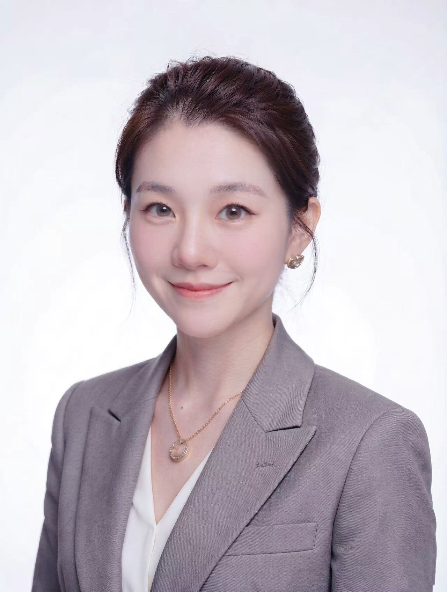
林珊珊
財務顧問Financial Advisor